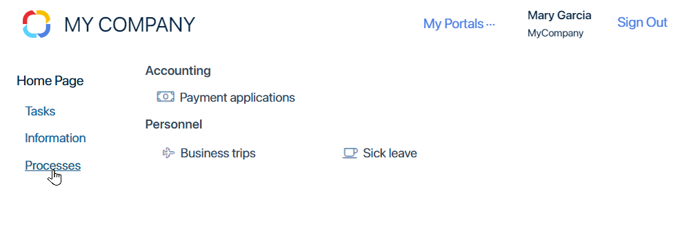
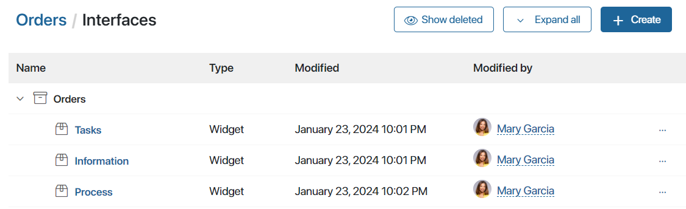
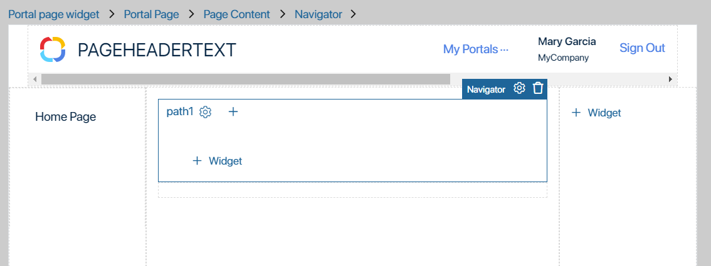
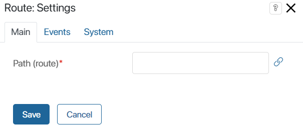
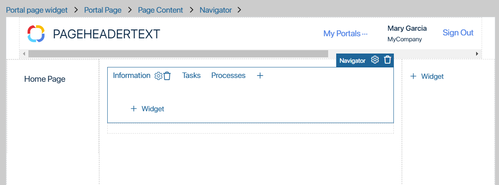
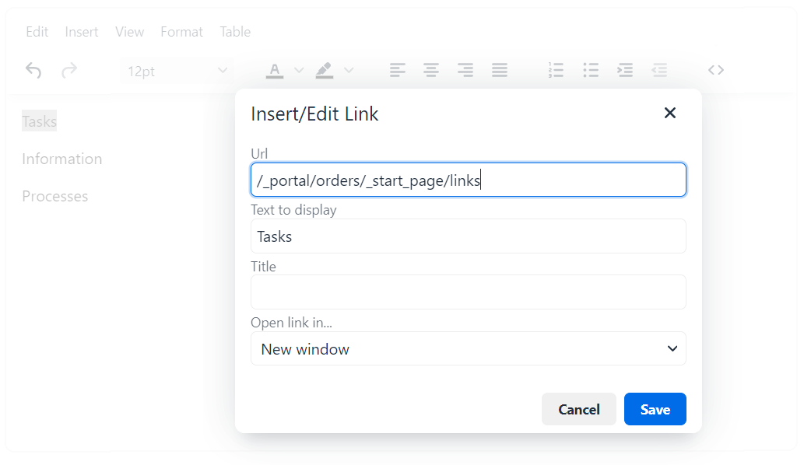

The widget generates a URL address that can be placed on the page as a link or button. When the user clicks on the link, the content of another widget is displayed. The user can also enter the link directly in the address bar of the browser.
The Navigator widget is convenient to use to customize navigation on a single page without switching between several pages. This approach is used by default in the Portal navigation widget, so that the data of the portal page by template is displayed on other pages according to the template.
For example, let’s customize a dynamic page of an external portal using the Navigator widget. When clicking on the links in the left menu, the page will display different content:
- Useful information.
- User tasks.
- Processes that the user can run.
To do this:
- Let’s add the Navigator widget to the portal page. In its settings, we will create three URL addresses and bind three widgets (information, tasks, processes) to them.
- In the left menu of the portal page, we will place the addresses as links.
Then when a user clicks on a link in the left menu of the page, they will see the content of the widget bound to this link in the navigator settings. The content will be displayed in the part of the page where the Navigator widget is placed.

Let’s take a closer look at this example where a portal created from a template in the Orders workspace is used.
Set up the widget
- Beforehand, in the Orders workspace, create widgets whose content will be dynamically displayed on the portal. Set their settings, and publish them.

- In the Orders workspace menu, select Portal. To place the Navigator widget on the home page of the portal, open its template in the interface designer. To do this, click on the name of the home page.
- Add the Navigator widget to the main part of the page, where the user will see the contents of the widgets created earlier. A system settings window will open that can be customized later. Click Save.

- On the field of the Navigator widget, you will see the keyword path1, which can be used to collect a URL address. For illustration, let’s create three addresses with the following keywords: information, tasks, and processes, to which we will bind the corresponding widgets.
To add an address to the widget field, click the + icon at the top of the widget. The route settings window will open, where you can specify a keyword for the new URL address.

Configure the information, tasks, and processes routes.

- Add the widgets you created earlier to each route tab. Then when the user goes to the created address, they will see the content of the widget you placed on the corresponding tab of the route.
- Save the Navigator widget settings and publish the changes.
- Now you can generate addresses to display the contents of widgets bound to them. The address consists of the URL address of the page where the Navigator widget is placed and the keyword you specified in the route. Copy the URL address of the page in its settings. In our example, we will get three URL addresses:
- /_portal/orders/_start_page/ info.
- /_portal/orders/_start_page/tasks.
- /_portal/orders/_start_page/processes.
начало примечание
Important
In the Navigator widget, you can work with portal pages using TypeScript methods. Read more about it in BRIX TS SDK.
конец примечание
Customize following the URLs
Now let’s place the created addresses in the left menu of the home page of the portal. The user will click on the link and see the content of the widget bound to this link in the navigator settings. In our example, we will customize the links using the Text widget. To do this:
- Place the Text widget in the part of the page template where the user will see the links. In our example, this is the left menu of the home page.
- In the Text widget settings, specify three URL addresses created in the Navigator widget settings.
 - Save the Text widget settings. Then save and publish the home-page settings in the interface designer.
Now on the home page of the portal, you can follow the links configured in the left menu. At the same time, the main part of the page, where the Navigator widget is placed, will display the information the user needs.
Found a typo? Select it and press Ctrl+Enter to send us feedback